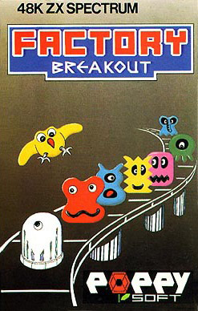
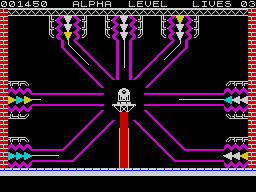
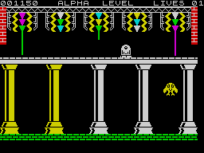
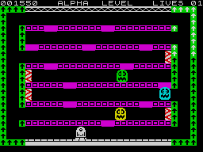

Factory Breakout


{kind=link}

| Publisher: | Poppy Soft |
| Price: | £5.95 |
| Year: | 1984 |
| Source: | CRASH, Issue 6 |

Aliens have been blamed for a lot of things since Space Invaders replaced Tank Pong and Tennis as a video game, but they haven’t usually been blamed for causing strikes. In this new game from Poppy Soft, alien monsters have activated the self-destruct mechanism of the X-IAL robot factory. So all the other robots have gone on strike and only Zirky is left. Can you help him evade the monsters and break out of the factory?

The game has three different screens and gets harder with each successfully completed go. In the first, Zirky is in his egg capsule at the centre of the screen. The factory’s self-destruct mechanism is already firing deadly laser beams at him from seven directions. The rays progress slowly, giving him time to swivel round to each in turn and fire back with his defence laser. This stops the deadly rays for a moment only. Below him, a column of energy is rising up under the egg — when it reaches him, Zirky is saved, and transported out as a fully fledged Zirconium Mk III robot.
Sadly, his transportation leads him on to the rejection line, where five overhead lasers keep firing. Zirky must pass them all safely. Each laser is made up of three vari-coloured beams, white being the fastest. If he spends too long in the rejection chamber a killer canary comes up to get him. In later screens this chamber may have conveyor belts.

The third screen is a platform type with seven levels. On the top six there are two or three connecting doors to the next level down. A lift on either side of the platform complex takes Zirky up. He can exit at only two (different) levels on either side before reaching the top. Three monsters (on the first screen) inhabit this area and chase Zirky like mad. The idea is to change the colours of all the doorways by passing through them. This has to be done three times. At the ends of some corridors there are force fields, rather like power pills in a Pacman game, once eaten they disappear but allow you to kill off the monsters for a few moments.
It all sounds quite simple, but on later levels, things are deteriorating in the factory — conveyor belts start up, not all in the same direction at the same time either — monsters are on the increase — in fact it begins to look like a normal day at any British factory.
CRITICISM

‘Brill! Factory Breakout is one of the best Spectrum games I have seen over the past few months. It contains colourful, smooth graphics, it’s got some pretty original ideas included and I really enjoyed it. This game will definitely be a winner in the Spectrum market and I would strongly recommend it for a game of the month — in fact MEGABRILL!’
‘The graphics are of a high standard — in a way quite simple shapes, but imaginatively designed and ultra-smooth. There are nice touches like the mirror image of the ground over which Zirky travels. The skill level of the game has been really well pitched, with the easiest (Alpha) level still being very hard for the first few plays. The game demands a high degree of skill and timing, and because of the three very different screens, each type of skill is varied. Very playable and very addictive.’
‘Basically this game includes three different types of game, each of which requires a different talent to get through them, each of them being excellent as well. Graphics are large and very smooth, not flickering one little bit. Aliens are well animated and are progressively more intelligent — I think they learn by their mistakes! The keyboard is nicely laid out with few controls (it’s cursors, but only 5 and 8 are used for direction) and they are responsive. Sound is well used where appropriate and there are nice tunes. Factory Breakout is playable and very addictive with a good progression between skill levels so it builds up with your skill. A great game which I don’t think will ever age.’
COMMENTS
| Control keys: | 5/8 left/right, 0 to fire |
| Joystick: | Protek, AGF and Kempston |
| Keyboard play: | Simple keys and responsive |
| Use of colour: | Very good |
| Graphics: | Excellent |
| Sound: | Very good |
| Skill levels: | Progressive through 5 levels |
| Lives: | 3 |
| Screens: | 3 |
| Originality: | Highly original ideas |
| General rating: | Addictive, playable and highly recommended. |
| Use of computer: | 85% |
| Graphics: | 89% |
| Playability: | 92% |
| Getting started: | 85% |
| Addictive qualities: | 91% |
| Originality: | 94% |
| Value for money: | 92% |
| Overall: | 90% |